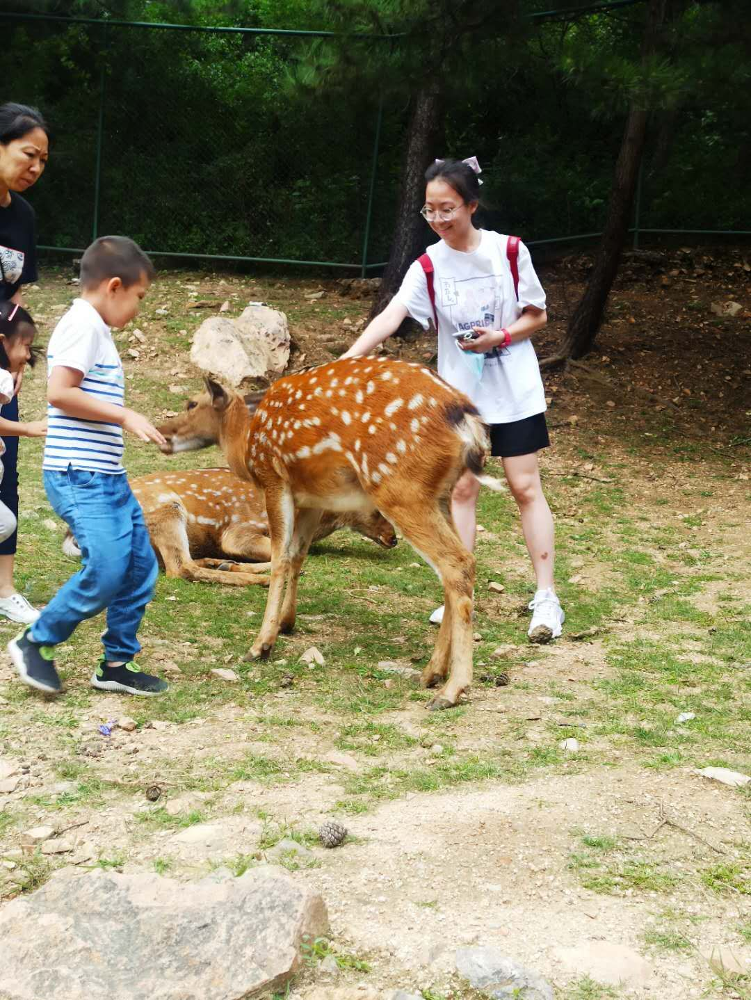

我叫张夏菲，来自福建泉州。现担任大数据全英班的团支书，也是一个话唠，兼任班级团建活动的气氛调节员。我的特长是演讲，写作和短跑。我很喜欢小动物（特别是小鹿！！）还喜欢摄影（不是大佬）。说起演讲，我还和世中运有一段缘分。我不仅两次参加福建省世中运形象大使选拔赛获得二等奖，我还作为志愿者，带领世中运的决赛选手参观校史馆。写作方面，曾经获得过福建省语文报杯二等奖。泉州市英语周报杯作文竞赛二等奖。运动方面，我初中高中参加的校运会100米跑步都是第一名。被校领导戏谑为“女飞人”。
My name is Zhang Xiafei, from Quanzhou, Fujian province. Now I am managing my class stuff related to the communist Youth League of China. I am also quite loquacious and the atmosphere coordinator during activities of our class. My strengths are speech, writing and sprinting. I love small animals (especially deer!!) I also like photography (even though not very good at it). As for speeches, I gave an speech during the Gymnasiade. I not only participated in the Ambassador selection contest of Fujian Province World Games for Secondary School Students twice and won the second prize, but also led the finalists of the Gymnasiade to visit the history Museum of the university as a volunteer. As for writing, I once won the second prize of Fujian Language Newspaper Cup and the second prize of Quanzhou English Weekly Cup Composition Contest. In terms of sports, I won the first prize in 100-meter running in the sports meeting of my senior high school and was nicknamed "flying woman" by school leaders.